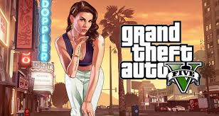
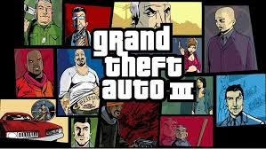
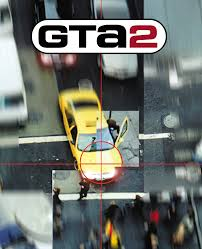
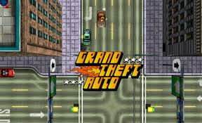

Rockstar Games es una de las empresas de videojuegos más conocidas: autores de Grand Theft Auto o Red Dead Redemption, pero también de muchos otros juegos durante su historia como Bully, Manhunt, L.A. Noire... Repasamos su historia, polémicas más sonadas, curiosidades, mejores juegos... El nombre de Rockstar Games no se suele decir a la ligera en la industria de los videojuegos. Muy pocas compañías, de las dedicadas únicamente a la producción de videojuegos para todas las plataformas, gozan de la popularidad de Rockstar.Por supuesto, todos conocemos a Rockstar por una saga: Grand Theft Auto. "El GTA" ha sido una institución durante ya varias generaciones de consolas, pero sobre todo a partir de 2001 y GTA III en PlayStation 2... hasta llegar a nuestros días, con GTA V de PS3... y PS4... y PS5. Pero Rockstar Games es mucho más que GTA. También es más que Red Dead Redemption, su otro pilar no menos importante. O lo ha sido, al menos. En este reportaje vamos a repasar toda la historia de Rockstar Games, sus humildes orígenes como DMA Design, y cómo el estudio fundado por los hermanos Sam y Dan Houser, con la ayuda de Take-Two Interactive, se convirtieron en el coloso que son hoy día... no sin pasar por muchas polémicas antes.

Explora el vasto mundo de Los Santos en este juego de acción y aventuras.

Resuelve crímenes y desentraña misterios en la ciudad de Los Ángeles en los años 40.

Sobrevive a la vida escolar en la Academia Bullworth y enfréntate a tus rivales.

Sobrevive a la vida escolar en la Academia Bullworth y enfréntate a tus rivales.

Participa en un siniestro juego de supervivencia donde cada movimiento puede ser el último.

Compite en carreras callejeras intensas por las calles de Los Ángeles.